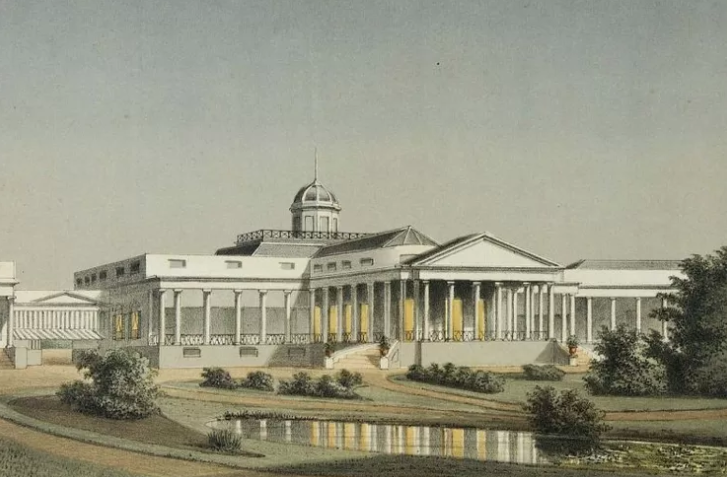
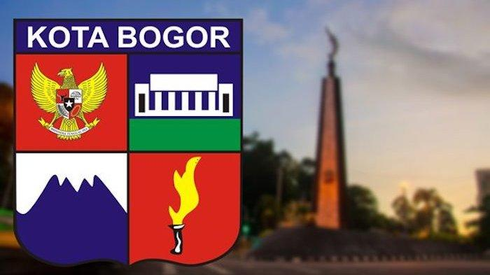
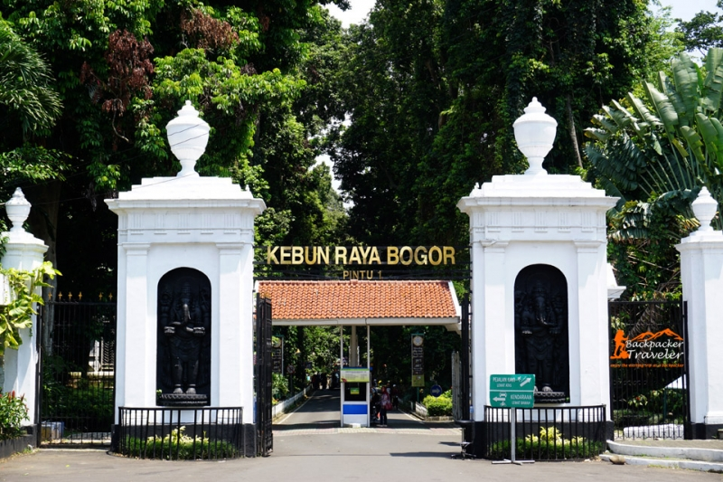
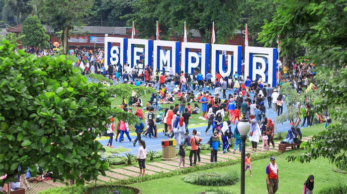

Sejarah
Asal kata Bogor bisa berasal dari kata: (1) bokor, (2) bakor, (3) baghar/baqar, dan (4) Buitenzorg. Kenapa bokor bisa dijadikan Bogor. Dahulu kala ada dua
orang juru pantun yang sangat terkenal pada jamannya, yang dua duanya sangat hafal verbal tentang riwayat Pajajaran dan babad Bogor seperti yang pernah
disusun pada tahun 1925. Juru pantun itu adalah: Pa Cilong dan Aki Rambeng. Dalam salah satu pantun yang dikarang Pa Cilong seperti yang termuat dalam naskah
Pancer Pajajaran yakni Pantun Bogor. Bokor disini artinya ‘tunggul’ kawung (bagian bawah dari pohon kawung sisa tebangan. Kawung adalah bahasa Sunda, dalam bahasa
Indonesia-nya adalah pohon nira atau enau). Bukti bahwa Bogor sebagai habitat pohon kawung/enau atau nira, adalah ada beberapa tempat di Bogor yang menggunakan kata
kawung, seperti: Kawungluwuk, Cikawung, dan Bantar Kawung.

Ada yang berpendapat lain, bahwa Bogor berasal dari bakor. Bakor artinya bakul logam yang terbuat dari nikel, tembaga, perak, kuningan dan lainnya.
Kalau teori asal usul nama Bogor berasal dari kata bakor, berarti Bogor berdiri pada jaman dan budaya logam, padahal jaman logam sudah lewat ketika cikal bakal
Bogor akan tumbuh. Kalau menggunakan teori bahwa kata bogor berasal dari baghar/baqar dimana kata berasal dari bahasa Arab tersebut artinya sapi.
Artinya Bogor berdiri setelah bangsa Arab bermukim di Bogor. Padahal orang Arab yang bermukim di Bogor dimulai pada awal abad 19 atas prakarsa Belanda.
Yang terahir ada teori yang menyatakan bahwa kata bogor adalah plesetan dari kata Buitenzorg. Kata Buitenzorg adalah nama resmi Bogor pada masa penjajahan Belanda.
Arti buitenzorg kira-kira sama dengan ‘keluar dari kesibukan’ , aman tentram’, ‘tenang’.
Geografis
Secara geografis Kota Bogor terletak di antara 106’ 48’ BT dan 6’ 26’ LS, kedudukan geografis Kota Bogor di tengah-tengah wilayah Kabupaten Bogor serta lokasinya
sangat dekat dengan Ibukota Negara, merupakan potensi yang strategis bagi perkembangan dan pertumbuhan ekonomi dan jasa, pusat kegiatan nasional untuk industri,
perdagangan, transportasi, komunikasi, dan pariwisata.

Ketinggian
Kota Bogor mempunyai rata-rata ketinggian minimum 190 m dan maksimum 330 m dari permukaan laut.
Iklim
Kondisi iklim di Kota Bogor suhu rata-rata tiap bulan 26’ C dengan suhu terendah 21,8’ C dengan suhu tertinggi 30,4’ C. Kelembaban udara 70 %, Curah hujan rata-rata
setiap tahun sekitar 3.500 – 4000 mm dengan curah hujan terbesar pada bulan Desember dan Januari.
Wilayah Administrasi
Luas Wilayah Kota bogor sebesar 11.850 Ha terdiri dari 6 kecamatan dan 68 kelurahan. Kemudian Secara Administratif kota Bogor terdiri dari 6 wilayah kecamatan,
31 kelurahan dan 37 desa (lima diantaranya termasuk desa tertinggal yaitu desa Pamoyanan, Genteng, Balungbangjaya, Mekarwangi dan Sindangrasa), 210 dusun, 623 RW,
2.712 RT dan dikelilingi oleh Wilayah Kabupaten Bogor.
Wisata
Bogor, kota hujan dengan beribu keindahan. Kota berhawa sejuk ini telah berkembang menjadi kawasan wisata dengan sederet pesona. Bukan cuma kawasan Puncaknya yang
layak dikunjungi, masih ada puluhan tempat wisata Bogor lainnya yang tak kalah menarik. Apa saja tempat wisata Bogor yang bisa Anda kunjungi saat liburan nanti?
Berikut ini beberapa di antaranya yang bisa kami rekomendasikan.
Kebun Raya Bogor

Kebun Raya Bogor atau Kebun Botani Bogor adalah sebuah kebun botani besar yang terletak di Kota Bogor, Indonesia. Kebun ini dioperasikan oleh Lembaga Ilmu
Pengetahuan Indonesia. Kebun ini terletak di pusat kota Bogor dan bersebelahan dengan kompleks istana kepresidenan Istana Bogor.
Taman Sempur

Ingin rekreasi tapi tak bikin kantong menipis, Taman Sempur Bogor solusinya. Tempat wisata ini lokasinya tepat di samping Kebun Raya Bogor.
Taman Sempur cocok dikunjungi baik pada pagi maupun malam hari. Taman Sempur dulunya hanya sebatas tempat olahraga bagi warga Bogor.
Namun seiring berjalannya waktu, kawasan ini menjadi tempat rekreasi hingga kuliner.
Sejak tahun 2010 Taman Sempur terus bersolek. Wahana bermain dan fasilitasnya semakin lengkap. Tidak hanya itu, taman ini juga menjadi
ajang pegiat komunitas, untuk dapat mengekspresikan eksistensinya.